Curiosity before career
Deb grew up in Jamshedpur. Food was not the centre of family life. His grandfather cooked and left some early memories, but the obsession developed on its own: cycling to tuition, quietly saving or stealing a little pocket money, and stopping for chaat, bhel puri, dosa and whatever else he wanted to taste that week.
It was never nostalgia for one regional cuisine. It was curiosity across all of them, from the beginning.
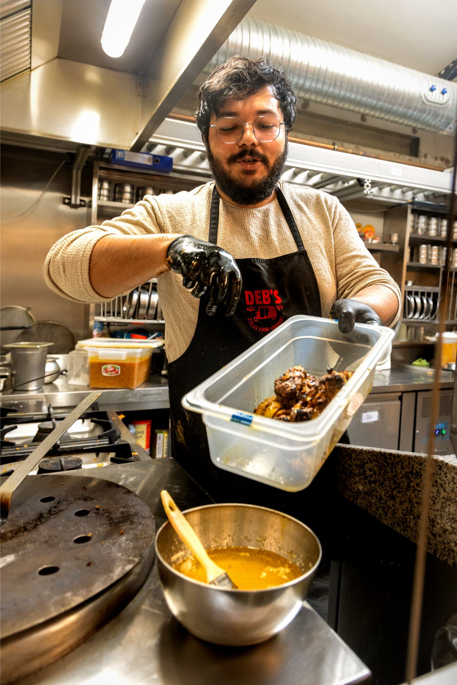
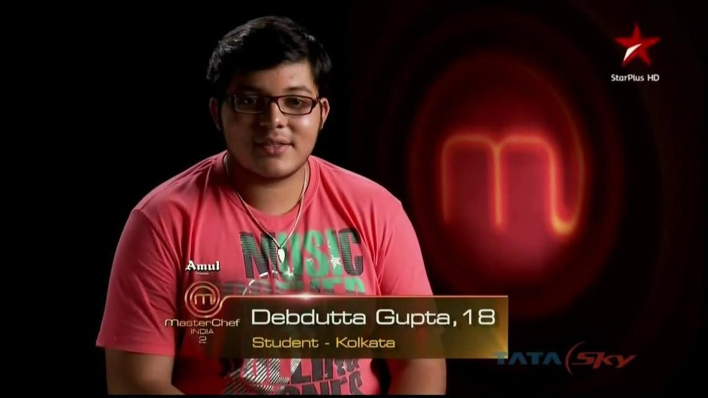
MasterChef India, season 2
While still at school, Deb appeared on MasterChef India Season 2. It was his first structured exposure to professional culinary life, and to chefs including Vikas Khanna and Kunal Kapur.
The programme did not make him a chef. It opened the door to a professional world of food, and it convinced his family and the people around him that cooking could be a serious career.
Professional foundation
IHM Chennai
Where the discipline, endurance and structure came from.
Haaga-Helia University of Applied Sciences, Finland
International study exposure.
University of Stavanger, Norway
International study exposure.
Institut Paul Bocuse, Lyon (now Institut Lyfe)
Culinary Leadership & Innovation.
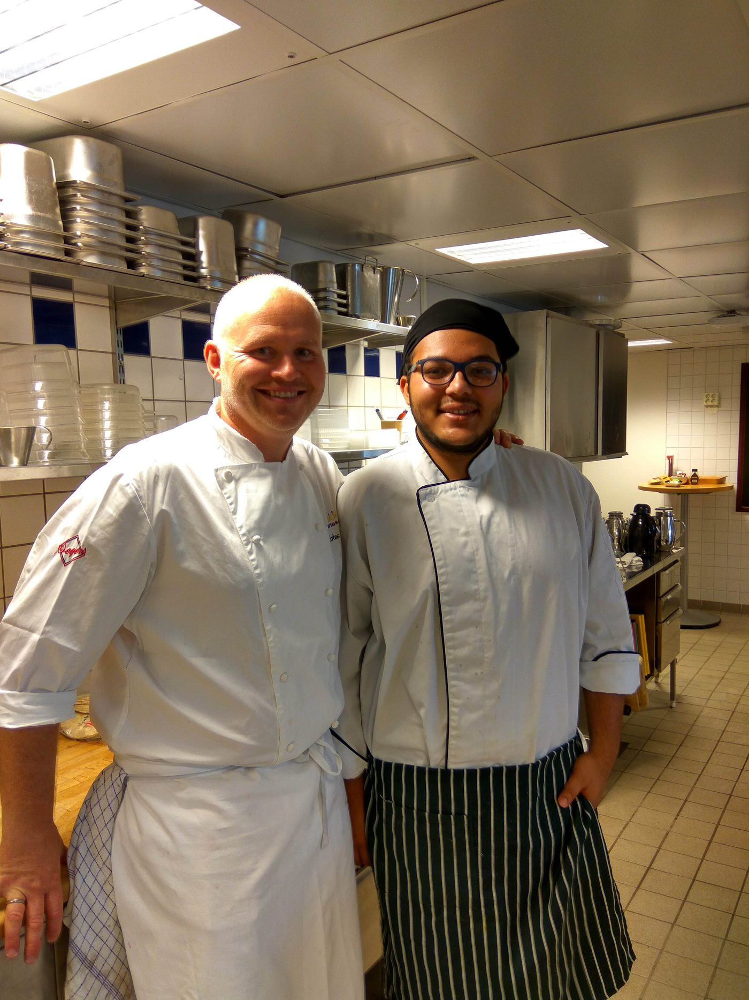
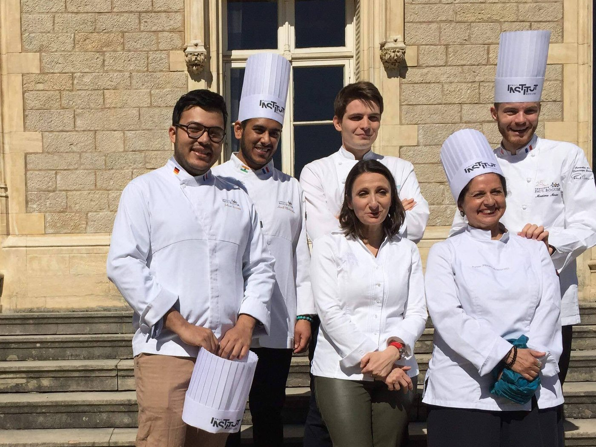
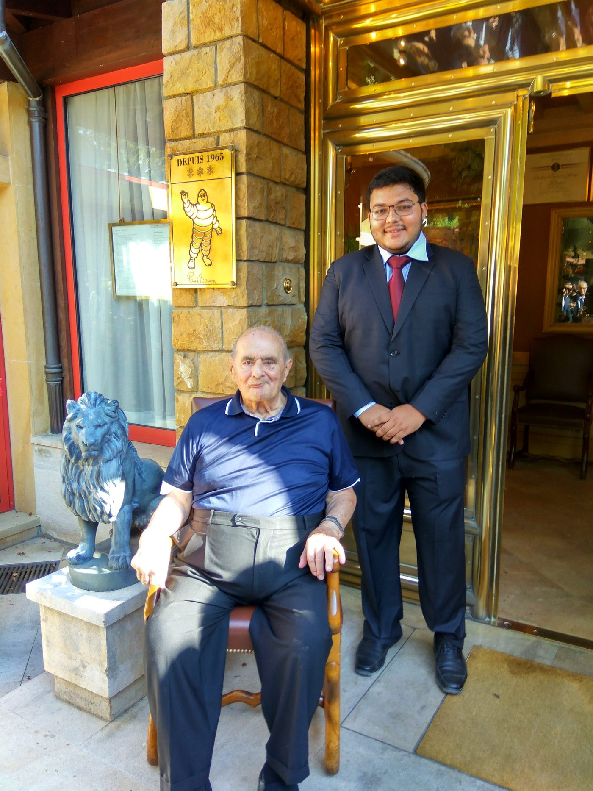
Before the restaurant, a research question
Deb’s master’s thesis studied French consumers’ perception and acceptance of Indian food. He first examined the pre-perception created by familiar curry-restaurant codes. In his first professional project, he then ran 53 weeks of 53 different regional Indian menus and compared how diners perceived the food afterwards.
A paturi wrapped in banana leaf could be read as tropical or island food, while butter chicken was instantly coded as Indian. This research became part of the logic behind Deb’s Bistro: broaden the understanding of Indian food without making the food less Indian.
Deb’s Food Trails
“A recipe can tell you how to cook a dish. It cannot tell you what the dish is supposed to taste like.”
Deb gives roughly one month a year to food travel and research in India, moving through villages and cities by train, car and motorbike, with friends, on local recommendations, or simply with people he meets on the way.
The research looks past the recipe: climate, history, culture, nutrition, seasonality, environment, accompaniments, meal structure, and why a place eats the way it does.
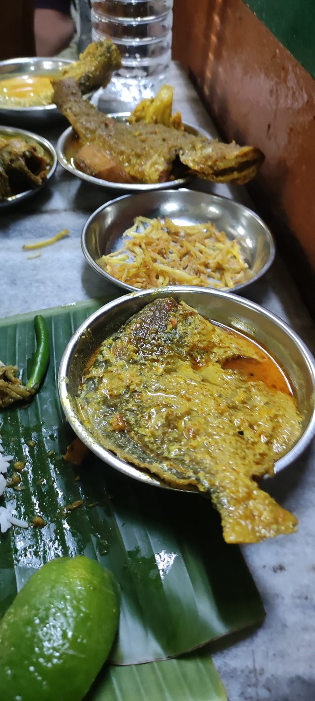
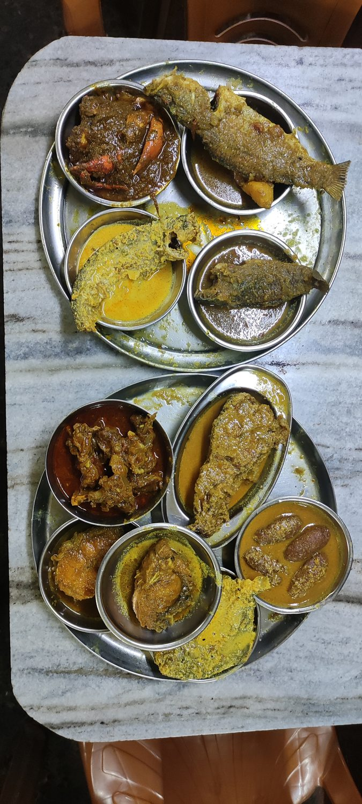
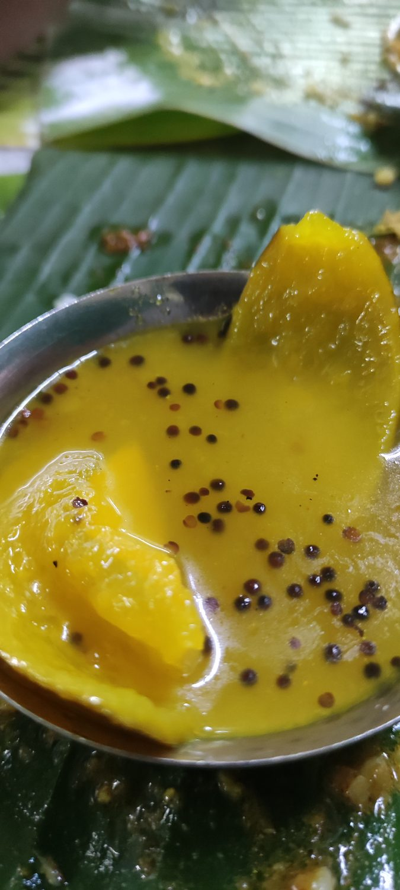
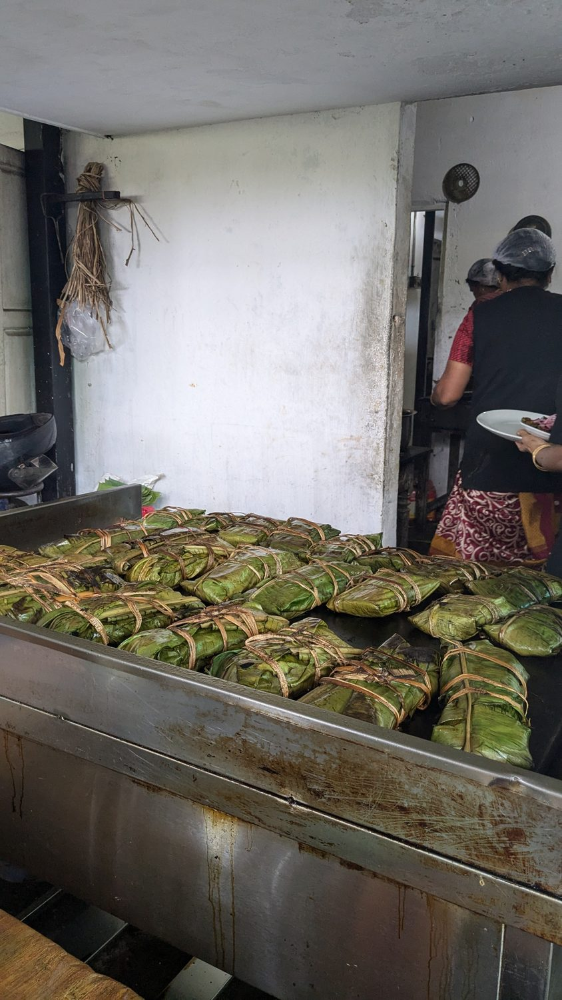
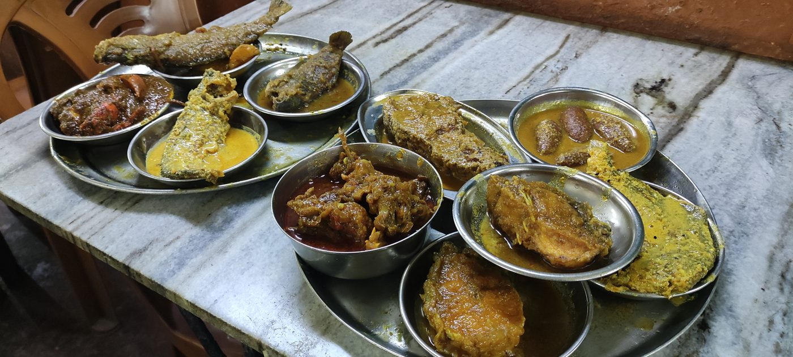
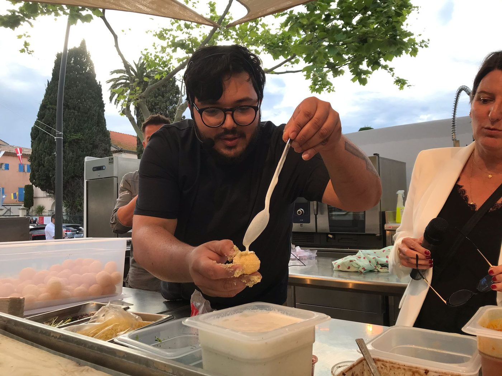
Opening Deb’s, 2019
Deb opened Deb’s Bistro in Lyon at 26, with very little money, no car, no family business network and no established local support system. He carried supplies from Metro and Promocash behind a bicycle, using a small cargo trailer. The restaurant began with ambitious changing regional menus.
early Deb's, the bicycle and cargo trailer
Cooking with Deb, the markets, the reopening period
Pandemic, community, rebuilding
Within months of opening, the pandemic closed restaurants. Deb stopped paying himself and returned to India partly to reduce living costs. He created “Cooking with Deb” weekend sessions: people bought ingredients in advance, cooked with him remotely and ate together.
Later, Lyon market opportunities helped the restaurant regain visibility. Early coverage and reviews had arrived just before the shutdown, including Le Progrès and Lyon Tribune, but the normal launch momentum was lost. The reopening became a slow community rebuild.
A destination people choose
Deb’s is not in a prime high-footfall restaurant location. Guests generally make a deliberate decision to reserve and come. Today the community includes Lyonnais regulars, Indians living in France looking for regional food, French guests who travelled or worked in India and miss particular tastes, and people bringing friends or family to discover a broader Indian food culture.
For some guests, Deb’s is a discovery of India. For others, it is a taste they have been trying to find again.
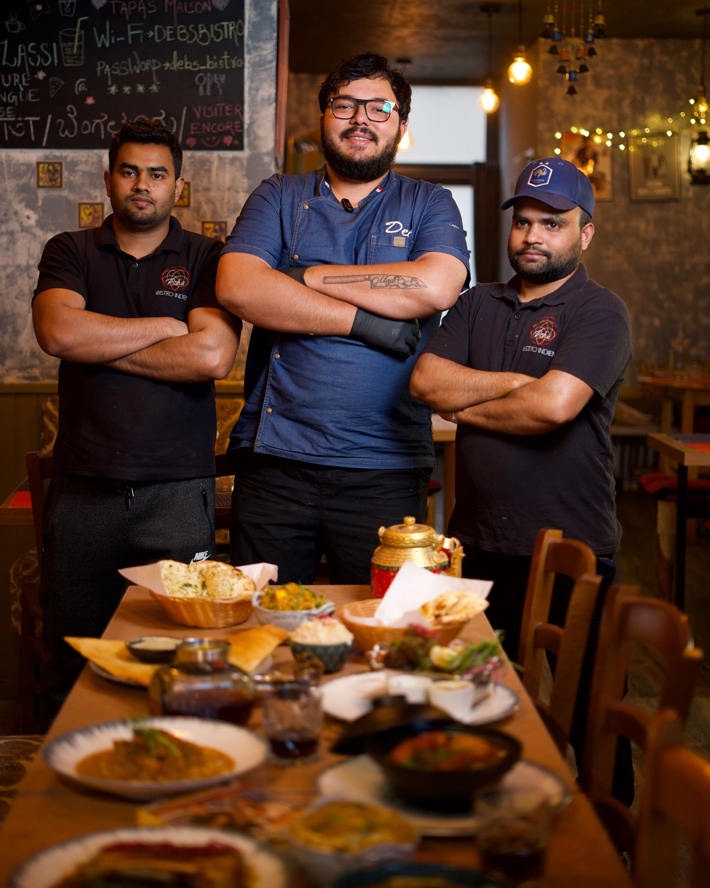
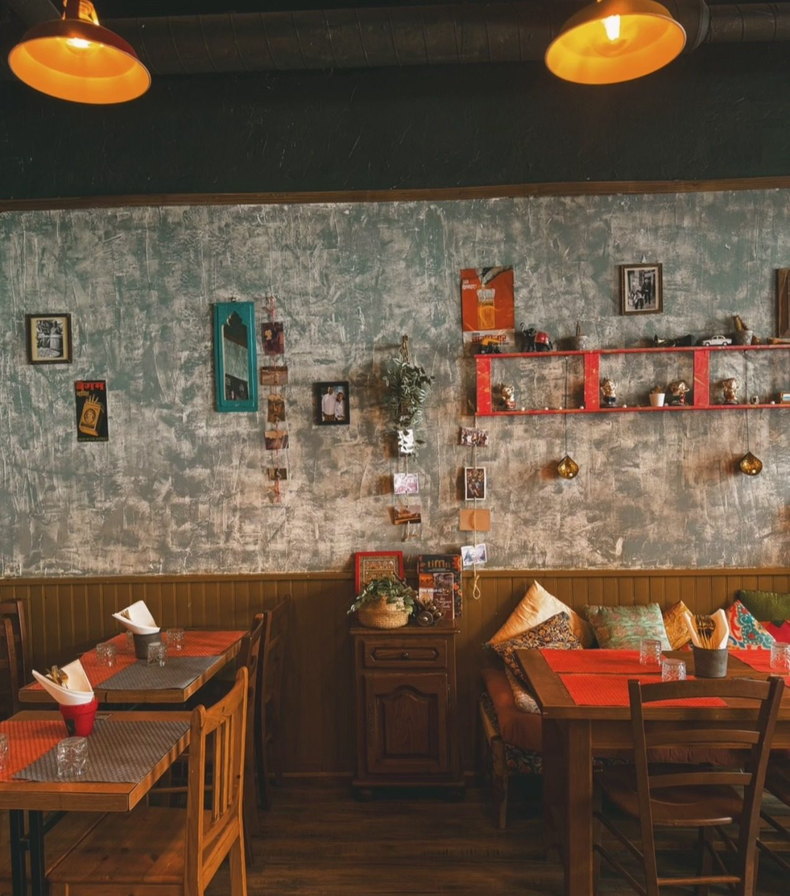
From Lyon to Paris
Deb’s Bistro in Lyon was followed by Deb’s Street Food in Paris, and then by Gully, Indian Street Kitchen. Gully is the evolution of the Paris street-food chapter.